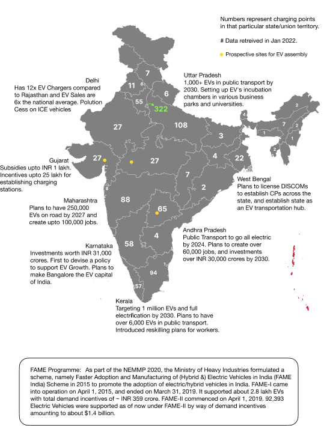
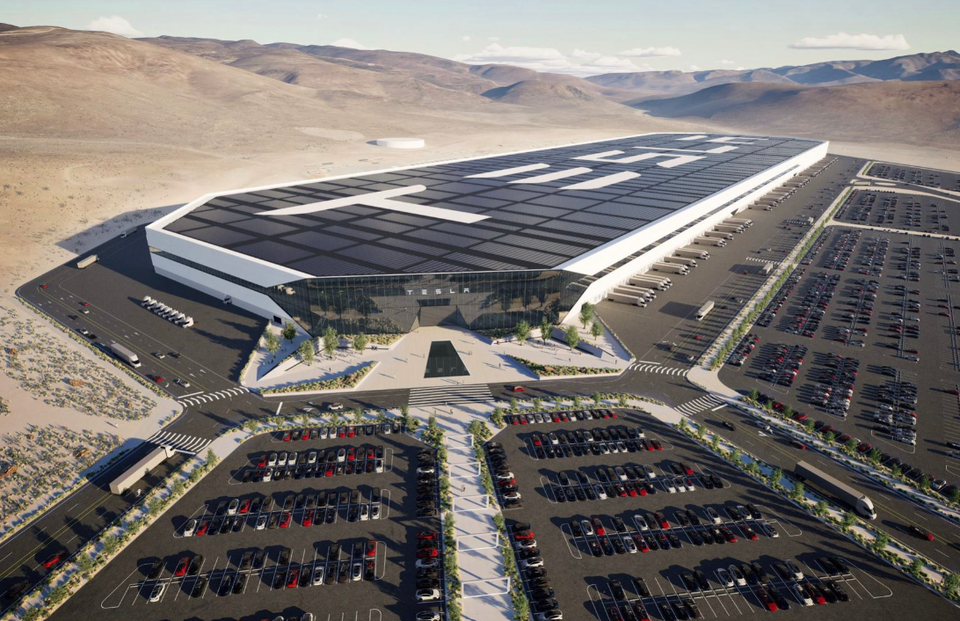

The Indian EV Market
India's automotive industry is the fifth-largest globally and will become the third-largest by 2030. It is expected to reach $150 billion by 2030. Global adoption of electric vehicles has increased significantly, with sales exceeding 2020 figures in the first half of 2021. A similar trend can be seen in India. India's automotive industry is the fifth-largest globally and will become the third-largest by 2030. It is expected to reach $150 billion by 2030. The Indian electric vehicle market is currently in its infancy and is projected to reach a CAGR of 90% from 2021 to 2030. In terms of penetration, EV sales will only account for 1.3% of all automobile sales in India in 2021. The surge in demand for electric vehicles is mainly due to favourable regulatory frameworks and has attracted foreign investment. At present, many state governments in India have already started taking steps towards net-zero emission and sustainability in business. About ten states and union territories (UTs) are increasing the usage of electric vehicles in three areas: manufacturing, infrastructure, and services. Given India's role as part of the global automotive quartet (US, China, Japan), large-scale changes in the Indian market will affect the industry's global presence.
Despite India's ambitious goals, the electric vehicle market in India is still in its infancy. But looking the other way, India offers the world's largest untapped market, especially in the two-wheeler sector. This sector is 100% FDI accepted through automatic route. Electric two-wheelers continue to sell in large numbers; however, electric cars are experiencing a sluggish uptake, accounting for less than 1% of the country's total 2.5 million passenger car sales. For example, the share of battery electric vehicles (BEVs) in all passenger cars sold in Europe was 5.4% in FY2020, compared to just 0.2% in India. However, as the ecosystem improves, the share of electric vehicles is estimated to increase to 12% of all passenger cars by 2026, according to the JMK Research Report. Over the past few years, there have been considerable advancements in the industry and are now keeping up with other countries.
While the approach to becoming a marketing hub varies between states and UTs, the general trend suggests one central point: most states aim to become hubs for producing electric vehicles and their components. Environmentally friendly battery production, processing, and storage are stimulated everywhere. States governments of Maharashtra and Uttar Pradesh have been taking the necessary steps to ensure such facilities' development.
With natural resources and cheap labour, India is becoming one of the most prominent hotspots for manufacturing and exports. Currently, the growth in the Indian automotive market is driven by factors such as the increase in domestic manufacturing, rapid urbanisation, a booming economy and growing environmental concerns. Fueled by the ongoing US-China trade war, many global automakers have shown interest in India. Additionally, e-car sales in India have increased since 2019, increasing by 361.78% year-over-year in 2020. As of July 2021, the number of registrations has increased further, exceeding the sales volume in 2020. It is estimated that about INR 940 billion (US$12.6 billion) will be invested in electric vehicle manufacturing in India over the next five years across the entire value chain.
Major EV players in the country
TATA
Tata Motors has formed an electric vehicle subsidiary, Tata Passenger Electric Mobility Limited (TPEML), to manufacture electric and hybrid vehicles. TPEML will not own any manufacturing plants but acquire output and assets from passenger vehicle factories. TPEML plans to have ten products by FY26, catering to all drive ranges. TATA currently holds a 71 per cent share in the EV market. The company is clocking sales of more than 1,000 units of EVs every month. During FY21, the company had clocked revenues of ₹500- ₹600 crores in the EV business. An intelligent strategy with a clear focus on breaking the key EV barriers and partnerships with group companies such as Tata Power, Tata Chemicals for establishing the EV ecosystem, dubbed the TATA ‘uniEVerse', has paid dividends for the company.
Mahindra
Mahindra Electric Mobility Limited is an Indian automobile company that designs and manufactures compact electric vehicles. The company adopted its current name after Mahindra acquired Reva Electric Car Company in 2010. After the acquisition, the company launched the electric hatchback e2o in 2013 in the Indian market. Mahindra manufactures electric vehicles in different segments - from sedans like eVerito to commercial cargo vehicles like eSupro. Recently, Mahindra Electric became the first Indian car manufacturer to cross 170 million kilometres. Mahindra has yet to announce its roadmap for India; however, it has pledged to invest around INR 3000 crores to develop electric vehicles.
Points of Concern
We've already compared EVs against conventional vehicles. Now, we'll look at the problems concerning the Indian automotive industry while also taking locally relevant issues into account. These include multiple factors like a supply-demand mismatch and uneconomically low volumes, leading to high costs when manufacturing EVs. Here's a brief on some of these issues:
Less competition leading to slower growth: Not many automobile manufacturers had entered the EV race. Hence, the development of EV technology has been relatively uneventful in the last decade.
Low Compatibility with Autonomous Driving Technology: Auto analysts say that advanced driver assistance systems on EVs will be tough to deploy on crowded Indian streets. Stray animals, including cattle, and potholes on the road are a further problem.
Lack of skilled labour: EV Technology is still evolving, and hence there is a lack of professional workers in the country. It also requires engineers to be more proficient in using semi-autonomous technologies. Their expertise in dealing with EVs is currently in the primitive phase, which will ultimately cause inconvenience to the consumer.
Issues in the supply chain: The EV market faces problems ensuring an end-to-end supply of components. This sector is dependent on importing the battery and power electronics from other countries, constituting almost two-thirds of an EV. Moreover, there is a lack of standardisation of battery packs, compromising quality and different safety standards. Returns don't have a definite structure, costing OEMs much money.

Negligible Charging Infrastructure: Minimum requirements to ensure the EV readiness in buildings and parking lots and the deployment of publicly accessible chargers on highway networks and in cities are also crucial to achieve increased EV adoption and boost consumer confidence. According to the Ministry of Heavy Industries, the total number of EV charging stations installed in India is just over 1000, significantly lower than the total number of EVs running in the country. Moreover, there are only a few charging stations on highways, so running EVs during long-distance journeys will be challenging and inconvenient. By 2026, India will need at least 40,000 public charging points to support the rising number of electric vehicles - requiring us to move at an ever-faster rate to meet the targets.
Competition With Economic Upliftment: 80% of the world remains underdeveloped, requiring massive capital expenses to uplift people to decent living standards. Capital-intensive technologies like EVs are simply not affordable for the majority of people.
Low Mileage: One of the major drawbacks of owning an EV is low mileage. On a single charge, many EVs can only travel around 150-200 km, which may not be sufficient for users who regularly travel longer distances.
Price of EVs: Electric vehicles are currently expensive compared to traditional internal combustion engine (ICE) vehicles. The initial cost is high, making them less accessible to the average consumer.
EV Charging Structure in India
In India, the EV charging infrastructure is developing rapidly but still faces several challenges. Key players in the EV charging ecosystem include private companies, public sector undertakings (PSUs), and government agencies. Companies such as Tata Power, Fortum, and ABB are leading the charge in setting up EV charging stations across the country. Additionally, state governments are also contributing to the growth of this infrastructure by setting up charging points and offering incentives for private players.
The government has introduced policies and incentives to support the development of EV charging infrastructure. The Faster Adoption and Manufacturing of Hybrid and Electric Vehicles (FAME) scheme, for example, provides financial incentives for the installation of EV charging stations. Furthermore, the government is working on standardizing the charging infrastructure to ensure compatibility and ease of use for consumers.
Despite these efforts, several challenges remain, such as the need for more widespread charging infrastructure, issues with interoperability, and the need for faster charging technologies. Addressing these challenges is crucial for the continued growth of the EV market in India.
A State-Wise Summary of Government Initiatives and Charging Points in India
Targeting the Post-Pandemic Vehicle Buyer
As a part of our market research, we surveyed a closed group of people. After examining the results and simultaneously checking with the prevailing market conditions, we arrived at the following conclusions:
It was visible that the pandemic caused people to use public transit less frequently than before or not at all - fuelled by the growing popularity of home delivery services and a work-from-home culture. Meanwhile, 29% of new buyers cited lack of cost competency as the reason for not choosing EVs over gasoline vehicles. The majority of the respondents agreed that they are very likely to consider an electric car over traditional vehicles if the administration addresses their concerns adequately.
We identified three kinds of prospective car buyers: the Conventionalist, the Frugalist, and the Innovationist. The Conventionalist maintains a neutral attitude towards EVs, citing a lack of clarity regarding EVs and the non-availability of proper charging infrastructure. They find it difficult to use new technology used in EVs. They’re less flexible and are not open to changes even after recognizing ecological factors primarily because it involves lifestyle changes. Hybrid vehicles appeal to this segment, as they come with minor lifestyle changes. If a proper support system is available, these users will likely consider switching to electric cars.
The second type of user, the Frugalist, maintains a mildly negative attitude towards EVs, citing high costs and the availability of cheap alternative powertrains. However, when informed of the long-term advantages of using EVs, they replied they were likely to reconsider their decision in about 7-10 years.
The buying preferences can be summarized as follows:
The average cost of a car purchased in the US is $45,000 (~35 lakh INR), while the same in India is $10,000 (~7.7 lakh INR). So, despite being sold in the US, the EV segment will serve India's premium/luxury segment. Data shows that demand is shifting towards premium cars and greater capacity.
Comparing the total cost of ownership over five years, electric cars turn out to be about 10% cheaper than their ICE counterparts. They require less frequent maintenance, and the annual maintenance costs associated with EVs are 85% lower than ICE cars. All three users had expressed concern over the lack of cost parity between EVs and combustion engine cars. Therefore, in a price-sensitive market like India, it is essential to stress the cost benefits of buying an EV and for customers to be made aware of their buying choices.
EVs are set to enter a new phase where supply-related processes and sustainability will be considered critical in the transition to clean energy. We shall now discuss various strategies that can be adopted to hasten this process at present and beyond, as well as existing policies that can be modified to be implemented in India.
Methodology
1. Tapping into new value pools
Tapping into New Value Pools
Micromobility: It encompasses a range of lightweight vehicles, including e-scooters, e-bikes, and e-rickshaws, providing travel services for short distances and accommodating at most two passengers at the same time. The sector is expected to make a robust post-pandemic recovery owing to strong support from governments worldwide. The industry currently finds application in the shared mobility sector and niche areas like mail delivery.
ADAS systems will further expand the market, possibly beyond their use in public transport. The advent of computer vision-based systems with collision avoidance capabilities will provide safer rides, giving micromobility options their long-awaited push to grow beyond the current mix. Adopting such models by ride-handling services will enable them to offer cheaper end-to-end services to everyone and access a significant portion of the market, irrespective of their scale of operations.
The uptake of micromobility solutions will vary by region — and offering a portfolio that matches local demands is key to success; penetration into 70% of the transport sector is achievable in the long term.
Shared Mobility: It includes pooled ridesharing, e-hailing services, rentals, and taxi services. The sector was hit hard by the COVID-19 pandemic and is expected to double in market size by the end of this decade. Adopting small-format models that are perceived safe due to ease of maintaining social distancing and fewer points of contact, the industry can generate better revenues amid the pandemic causing customers to drift away from shared modes of transport. Electric two-wheelers and three-wheelers are efficient means of transportation for long-distance trips, thereby meeting the rising demand for last-mile delivery.
eRoaming: Opening up CPs to all EV drivers through roaming agreements between e-mobility service providers and charging point operators can result in a more profitable business for operators and better capacity utilization. However, a uniform interoperability standard is vital for its success.
Battery Leasing: Battery leasing solutions will enable manufacturers to sell EVs without a battery, and consumers can opt to buy or lease EV batteries from an external source. Under this model, when buying an EV, it will come with a battery leasing arrangement that is prorated depending on the annual distance that the driver expects to cover. EV batteries deteriorate at about 2% annually — and battery leasing models guarantee the condition of battery packs as they are replaced once their capacity falls below a certain level (usually at around 65-70% of the original capacity).
Subscriptions: This model seems very promising for developing countries like India. Companies provide flexible options for customers to choose from, and the customer can upgrade or downgrade from their existing subscription according to their preferences. Other business models like fleet sales or battery leasing can also help companies improve profitability.
Direct Sales: Companies can save up to 25% in dealer margins and other incentives by adopting a direct/online selling strategy. Although 5% of global sales are made through online sales, it is expected that over half of the overall sales will be online by 2030.
2. Customisability
We’ve seen how important it is to make customers aware of their options. Additionally, cost comparability cannot be achieved in the sector unless global automakers can believe the Indian EV market is bankrollable- and therefore remains a long term target. Hence, the customers should get as many variants on the same brand- enabling them to choose the one that satisfies their requirements. For example, a company can provide two to three variants on the same model, differentiated by their driving range. There is a precise segmentation of EV buyers based on needs, and the companies can cater to each of these segments.
3. Targeting the right audience
Communicate Explaining: The key advantages of EVs must be explained and demonstrated in all communication opportunities. Experiments are part of the client learning process. Everyone should drive to understand the benefits of electric vehicles, but many haven't done so yet.
Don't Sell: Commercials and attractive, detailed descriptions are often incompatible. Traditional auto retailers are accustomed to commercial forces (incentives, campaigns), making it challenging for sales teams to apply this approach consistently. The concept of "agent" retailing, alongside the "Product Genius" model used by BMWi, seems to be a good option for electric vehicles due to the low product competition in this market segment.
Go Social! Customer education is a top priority in product marketing. Sales consultants should leverage social media for easy access to their customer base using text, images, and video. Avoid just using branded content — maintain conscientiousness while encouraging professionalism.
Emphasise the 'Novelty': Almost all vehicles are great but very similar! Most customers change cars and motorcycles without experiencing a fundamentally new product. Electric vehicles are new — offering a new sense, new economy, and new restrictions. While every innovation has its flaws, the novelty of EVs is a significant selling point.
Storyboards: Invite existing customers worldwide to share their own experiences with the company. Every ownership experience is unique. When customers from diverse backgrounds share what made their car special, it inspires other users and can convince prospective buyers to choose an EV over its alternatives.
Referrals: Referral programs are a tried and tested business model that encourages customers to spread the word about their cars. In exchange, customers receive a discount on the base price of their car or free miles (free charging). A similar system could be introduced in India, depending on the availability of charging networks.
4. Short Term Strategies
In a world of increasing global competition, the industry needs to have the capacity to innovate and upgrade. A targeted approach could achieve critical development in exports of product categories where India has a competitive edge. Possible collaborations with global suppliers relocating manufacturing operations to India could further reinforce these efforts and help build new capabilities.
Minimise Hidden Costs: There is a cost parity of about $12,000 between electric vehicles and ICE vehicles. Categories like real estate, IT, insurance, logistics, packaging, etc., are traditionally deprioritised, focusing primarily on material cost. However, an exhaustive analysis of various segments revealed that OEMs could cut 15 to 25% of total costs.
NOTE: Steel contributes to almost 22% of an automaker’s operational costs. Any fluctuation in global steel prices has a direct impact on profitability.
Using straightforward body styling with uncomplicated interior trims and reducing overall design complexity by eliminating extra electronics and additional structures can help optimise costs.
Staying Ahead in Adopting New Technology: Companies should integrate digital analytics and automation into their everyday operations. Advanced analytics, process digitisation, robotics, and automation could accelerate transformations necessary for future evolution. By physically integrating various EV components, companies can create more efficient thermal management solutions. Also, EV powertrain components are usually smaller than their ICE counterparts, making room for other systems and multiple options for creating new designs. Since most customers are tech-savvy, companies must keep up with others in the game and equip their products with advanced technology. It is also essential to democratise technology by cutting profit margins or pursuing vertical integration with partner firms.
Partnering and Collaborating with Competitors: A struggle for profitability usually accompanies the transition towards electrification. As companies have to repurpose their tools and platforms for manufacturing electric vehicles, collaborating with other manufacturers can ease the burden by reducing fixed costs, research and development expenses, and achieving total operational efficiency. High-volume procurement of raw materials results in better profit margins, which wouldn’t have been otherwise possible if companies went alone. There’s a tremendous increase in volume over the same base, which can bring down costs by up to 15%.
5. Direct Recycling of EV Batteries
EVs run without any tailpipe emissions over the course of their run, thanks to their batteries. But when these batteries reach the end of their life cycle, their benefits fade. These are intricately engineered devices, and if they end up in municipal waste — 91% of which end up in landfills or get incinerated, they can release various toxins, including chances of heavy metal toxicity. Even recycling can prove to be a hazardous process. Regarding the techniques used for recycling, direct recycling is preferred to the widely used recycling processes as it keeps the cathode mixture intact.
Although direct recycling is focused on single cells and yields just tens of grams of cathode powders, it can be adapted for large-scale models and become viable in the future.
6. Virtual Power Plants

Virtual Power Plants or VPPs provide an efficient way of utilising power from electric vehicles in grid balancing or trading in the electricity market (at peak time for energy arbitrage). This concept has opened up a new avenue for revenue generation if your business is based as fleet operators, bus operators, etc., that can play a VPP architecture role. A VPP will require a power network integrated with the secure communication network, protocols for data sharing and cyber security, etc., to operate, which, concerning India, could be possible in a medium to long term horizon.
7. Long Term Solutions: Local EV Assembly and Battery Production
Usually referred to as gigafactories, these plants make lithium-ion battery cells and provide end-to-end renewable energy solutions. They're essential for the foundation that will sustain individual industries in the foreseeable future. Despite receiving support from the government and being subject to industrial push in EV production, international brands are yet to announce any plans to set up such plants in the country. We’ve identified six areas that provide suitable battery production and EV assembly-Ahmedabad, Hyderabad, Howrah, Indore, Pune and Rourkela. The industry is open to foreign direct investment, and this remains the most viable path to export-led growth and the establishment of new technology-intensive clusters in any country. Moreover, the cost advantage associated with local production facilities drives future growth of adjacencies — especially in automation, electronics, and energy.
Companies can save upto two-thirds of costs incurred when electric vehicles are fully built in India — which converts to a small gap in achieving cost parity between electric vehicles and ICE vehicles. However, to facilitate local assembly of electric vehicles in India, companies will have to address very immediate industrial needs and spend upto $1 billion to set up a local manufacturing plant. However, this process can be expedited by partnering up with local OEMs with fully functional factories in India. The transition will be much smoother — and high volume procurement will help both parties save an additional $1,500 per $10,000 spent. Moreover, 70% of the components used in EVs are same as that of internal combustion engine vehicles. With the government offering subsidies up to 50% of project cost, combined with cheap labour and raw materials, break-even period can be brought down by 4-5 years.
Impact and Sustainability
The adoption of electric vehicles in India has the potential to significantly impact the environment and contribute to sustainability goals. EVs produce zero tailpipe emissions, which can help reduce air pollution and improve public health. Additionally, the shift towards electric vehicles supports India's commitment to reducing greenhouse gas emissions and achieving its climate goals.
However, the sustainability of electric vehicles also depends on the source of electricity used for charging. To maximize the environmental benefits, it is essential to focus on increasing the use of renewable energy sources for electricity generation. Efforts to improve battery recycling and reduce the environmental impact of battery production are also crucial for ensuring the long-term sustainability of EVs.
Carbon and Cost
Are EVs truly sustainable? They’re greener than internal combustion engines, but the goal of being 100% green might still be years away. EVs produce negligible tailpipe emissions, but this might not be the case when accounting for the GHG emissions during manufacturing and battery charging. Still, electric vehicles create a lower carbon footprint over their lifetime compared to cars and trucks with traditional engines.
In India, the average carbon intensity of electricity generated stands at 540 gCO2 per kWh, which is about 14% higher than the global average of 475 gCO2 per kWh. This figure does not include other GHG emissions, which, if factored in, could lead to a total of 600 gCO2e per kWh generated.
Currently, electric vehicles in India generate about 124 gCO2 per km. This figure can be reduced by 30% in 2035 and 75% in 2050. Achieving these reductions requires decarbonisation in power generation, including the phasing down of unabated coal-fired power plants and most fossil fuel subsidies. Virtual Power Plants will help reduce grid maintenance frequency, which will also reflect in net emissions. Efforts to cut down pollution across various industries are expected to further reduce the environmental impact of EV production.
Cleaner battery production technologies involving direct recycling of used batteries have been suggested to reduce reliance on raw materials like manganese and cobalt. Direct recycling has generated profits of $7-20 per kWh capacity recycled in countries including China, the US, South Korea, and Belgium. However, the use of hydrometallurgical and pyrometallurgical recycling techniques has resulted in losses of about $12-24 per capacity recycled in the same set of countries.
Recycling
There has been a 43% increase in e-waste generation in India between FY18 and FY20. The pandemic-induced increase in electronic devices is expected to exacerbate this problem. A study by KPMG and ASSOCHAM stated that computer equipment accounts for almost 70% of e-waste in India, followed by telecom (12%), electrical equipment (8%), and medical equipment (7%).
Ninety-five per cent of the e-waste produced in India is recycled in the non-formal sector, and 5 per cent of the e-waste volume is handled in a standard unit. In and around metropolitan cities in India, there are over 3000 units engaged in the non-formal sector for e-waste recycling. Non-formal units of e-waste recyclers are distributed all over India. Many industries are in Delhi, Tamil Nadu, U.P., Karnataka, Maharashtra, Gujarat, Kerala, Andhra Pradesh, West Bengal, Rajasthan, etc. Uttar Pradesh, which generates 2,02,000 tonnes per annum (TPA) of e-waste, has only 22 functioning units to process 86,130 tonnes of e-waste, which is not enough to process half of the e-waste generated by the state. Karnataka has 57 ewaste recycling units that can process 44,620 tonnes of e-waste (1.78 lakh TPA caused). Maharashtra has 32 units that can recycle 47,810 tonnes out of 3.96 lakh TPA of e-waste generated. Considering the number of e-waste recycling units in the country and the e-waste generated, the government needs more recycling units. E-waste management laws have been in action in India since 2011, mandating that only authorised dismantlers and recyclers collect e-waste. E-waste (Management) Rules, 2016, were enacted on October 1, 2017. Over 21 electronic products were included under this rule. The rule is also applicable to components or consumables or parts or spares of Electrical and Electronic Equipment (EEE) and related products. The government has also strengthened the Extended Producer Responsibility (EPR) to ensure the take-back of end-of-life products. A new configuration called Producer Responsibility Organisation (PRO) has been introduced to bolster EPR further.
Recycling as a business: Recycling is not just a matter of recovering recyclable material, it also forms the basis of a complete business frontier. Companies can turn the rising demand for recycled products into a competitive advantage by getting into strategic alliances and profitable partnerships with suppliers, distributors and other stakeholders. With governments realising the potential of recycling and setting future goals, the industry should boom further.
Conclusion

The electric vehicle market in India is poised for significant growth, driven by favorable government policies, technological advancements, and increasing consumer awareness. While there are challenges to overcome, such as the need for improved charging infrastructure and lower EV costs, the overall outlook for the EV sector is positive. By addressing these challenges and continuing to invest in EV technology and infrastructure, India can achieve its goal of becoming a leading player in the global electric vehicle market.